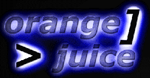

| c'est quoi une démo ? |
Une démo est une manière de montrer aux autres ce qu'est capable de faire un groupe en programmation (on appelle ca code dans notre jargon), musique (zik) et graphiques (gfx).
Il en existe plusieurs types, on en distingue trois grands types sur PC :- Démo (ou megademo) : taille totale peu limitée (souvent 10 Mo)
- Intro 64k : comme son nom l'indique, limitée à 64 ko
- Intros 4k : limitée à 4 ko (et souvent musique interdite)
| qui sont les créateurs de démos ? |
Ce sont généralement des étudiants, donc des personnes assez jeunes (17 à 30 ans) qui sont assez passionnés d'informatique pour pouvoir passer des nuits à fignoler leurs démos.
Comme une démo c'est généralement long à faire, (non pas une journée, plutôt des journées, des mois...) et qu'une personne qui sait bien coder n'est pas toujours une personne très douée en musique, on va se répartir le travail entre plusieurs personnes. Ces personnes vont être rassemblées en ce que l'on appelle un groupe.
Un groupe, comme une société, à pour s'identifier un nom par exemple : Tiny Toons, Aegis, Nooon.
| comment ce fait-ce ? |
En fait le(s) coder(s) d'un groupe passent (entre autre) leur temps libre à programmer tous seuls dans leur coin des bouts de programmes (des routines) qui permettent de gérer la musique, d'afficher des images et de faire ce que l'on appelle des "effets". Et quelques jours avant de présenter une demo (parfois quelques semaines, le plus souvent quelques heures !) il réunit ces routines et crée un tout qui, associé aux gfx des graphistes et à la musique du musicien, forme soit une megademo, soit une intro.
| présenter une demo ? où ça ? |
A une coding party ! Ces assemblées organisés régulièrement ont pour but de rassembler la scene (la communauté des demo-makers) dans une grande fête de plusieurs jours non-stop (en général 3 jours et 2 nuits). Sont organisés des concours de démos, d'intros, de modules (nom donné aux fichiers contenant les musiques faites par les "zikos") et de gfx. On trouve en plus des concours annexes tels que lancer de disquettes, de disques durs, d'ordinateurs (!), buvage de bouteilles de coca-cola, etc.
| mais tout ca, c'est avec quel type d'ordinateurs ? |
De tout ! Atari (520, 1040, Falcon), C64, TO7, BeBox, PC (sous DOS et plus rarement sous Linux, OS/2, Windows 95), Macintosh, Amiga (500, 600, 1200, ...), etc...
Mais les plus courant (à notre époque) sont les Amiga et les PC suivi des C64, des Atari, etc...
| j'ai compris maintenant, mais à quoi c'est du la scene ? |
Depuis les débuts de la micro-informatique (début des années 80) il existe ce que l'on appelle des pirates. Entre autres choses ils modifient des logiciels commerciaux (cela s'appelle "cracker" un programme) de facon à pouvoir les copier en toutes illégalité. Et pour montrer leur talent au monde, ils signaient (ca se fait de moins en moins de cette facon) leur oeuvre en rajoutant au début du logiciel une routine affichant divers effets graphiques avec un texte. C'est ainsi que par évolution est née la scene, la différence étant que la scene n'a plus rien à voir avec le piratage.